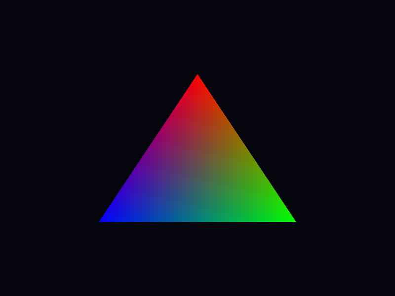

The Vulkan Library
English sentences that draw on a real graphics card, each beside the Vulkan calls it makes.
The vulkan library lets an EnglishScript program draw shaded triangles on the computer's graphics card, through the real Vulkan API.
python -m englishscript examples/gpu_triangle.english
That program draws a red, green and blue triangle and saves it as gpu_triangle.png in the folder it is run from.

The project page explains the idea behind the language and runs the compiler in a browser. A browser cannot reach Vulkan, so this library works only from the command line.
What it needs
- A graphics card with a Vulkan driver. Most recent cards have one.
- Nothing else. The library is plain Python and installs nothing: it calls the driver's own Vulkan loader (
vulkan-1.dllon Windows,libvulkan.so.1on Linux) through Python's built-inctypes.
It has been run on one computer: Windows 11 with an NVIDIA card. The Linux path is written but untested, and macOS is not supported.
If there is no usable card, Start Vulkan. reports a problem, which a program can catch with Try:.
A program
Use the vulkan library.
There is a vertex called Apex whose x is 0, whose y is -0.5, and whose colour is Red.
There is a vertex called East whose x is 0.5, whose y is 0.5, and whose colour is Green.
There is a vertex called West whose x is -0.5, whose y is 0.5, and whose colour is Blue.
There is a triangle called Hello whose top corner is Apex, whose right corner is East, and whose left corner is West.
There is a picture called Canvas whose width is 800, whose height is 600, and whose background is Black.
Start Vulkan.
Say "Drawing on {Vulkan's card}."
Prepare Canvas.
Draw Hello on Canvas.
Save Canvas as "triangle.png".
Close Vulkan.
Positions run from -1 to 1 across the picture, and from -1 at the top to 1 at the bottom, as in Vulkan. Each colour part runs from 0 to 1.
What the library gives a program
Kinds
| Kind | Properties |
|---|---|
colour | red, green, blue (numbers from 0 to 1) |
vertex | x, y (numbers), colour (a colour) |
triangle | top corner, right corner, left corner (vertices) |
picture | width, height (whole numbers from 1 to 8,192), background (a colour) |
driver | card (text: the name of the graphics card, or not started) |
Things
- Five colours:
Red,Green,Blue,BlackandWhite. - One driver, called
Vulkan.
A program may describe more colours, vertices, triangles and pictures of its own.
Verbs
Each verb stands for the Vulkan calls beside it.
| Sentence | What it does | Vulkan calls |
|---|---|---|
Start Vulkan. | Finds the best graphics card and opens it. | vkCreateInstance, vkEnumeratePhysicalDevices, vkCreateDevice, vkCreateCommandPool |
Prepare <picture>. | Makes the picture on the card, and everything needed to draw into it. | vkCreateImage, vkCreateImageView, vkCreateRenderPass, vkCreateFramebuffer, vkCreateShaderModule, vkCreateGraphicsPipelines |
Draw <triangle> on <picture>. | Draws one triangle, shading each point from the colours of its corners. | vkCreateBuffer, vkCmdBeginRenderPass, vkCmdBindPipeline, vkCmdBindVertexBuffers, vkCmdDraw, vkQueueSubmit |
Save <picture> as <text>. | Reads the picture back and writes it as a PNG file. | vkCmdCopyImageToBuffer, vkMapMemory |
Close Vulkan. | Gives everything back to the card. | vkDestroy..., vkDestroyDevice, vkDestroyInstance |
- The first
Drawon a picture clears it to its background. Later draws add to what is there. - If a program ends without
Close Vulkan., the library closes it anyway.
A worked-out value
the pixel of <picture> at <number> by <number>
This is one pixel read back from the card, as text such as 85, 85, 85: red, green and blue, each from 0 to 255. The first number counts across from the left, the second down from the top, both starting at 0.
Problems a program can recover from
All of these can be caught with Try: (section 8.5 of SYNTAX.md):
- there is no graphics card that Vulkan can use;
- a verb is used before
Start Vulkan., or a picture beforePrepare; - Vulkan is started twice, or a picture is prepared twice;
- a picture's width or height is not a whole number from 1 to 8,192;
- a pixel is asked for outside the picture;
- the file cannot be written.
A failed Try undoes changes to things in the program's world. It cannot undo what was already drawn on the card or written to a file.
What it does not do
- No window. The picture is drawn off screen and saved to a file.
- No shaders of your own. The library has one vertex shader, which passes each corner's position and colour through, and one fragment shader, which gives each point the colour blended from the corners. A program chooses the vertices and colours.
- Triangles only, in two dimensions, with no textures, depth or lighting.
- No checking layer. Vulkan's validation layers come with its SDK, which this library does not need or use.
How it works
englishscript/libraries/vulkan.pyholds the library's EnglishScript sentences and the Python functions behind its verbs.englishscript/libraries/_vk.pyis the bridge to Vulkan: the C structures and functions, declared withctypes, and the steps to draw into an off-screen picture and read it back.englishscript/libraries/_spirv.pybuilds the two shaders. Vulkan takes shaders as SPIR-V, a binary form normally made by a compiler that comes with the Vulkan SDK. So that no SDK is needed, this module assembles the SPIR-V itself, instruction by instruction.
For how a library is written in general, see section 9.4 of SYNTAX.md and englishscript/libraries/__init__.py.
examples/triangle.english draws the same triangle with no graphics card at all, by doing the card's work in EnglishScript and printing characters.